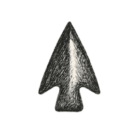

1 The First Horizon

Chapter 1
The Monster of Existence
Physics
“The cosmos is within us. We are made of star-stuff. We are a way for the universe to know itself.”—Carl Sagan
That bubble of Fokker memory—lodged somewhere in my hippocampus and amygdala alike—ended as abruptly as it began. Like a quantum fluctuation: brief, unexplainable, and gone before you could take a measurement. The context of that experiential bubble only reconstructed from the particle tracks form my mother’s later storytelling. But the physics stayed, or so I was promised. The plane—or perhaps several parallel planes, depending on which universe you ask—landed. My oblivious toddler self was tagged, transported, washed, rinsed, repeated.
The next clear frame I remember: I was happily walking and talking around a big house, fully fluent in the idea that these were my parents—the only ones I’d ever had. The world, I thought, had always been this way. Solid. Predictable. Like a classical fable masquerading as a life—Newtonian in its order, and just as uninterested in my confusion as I was in its origin story.
But the feeling that something was fundamentally off stayed with me, like a loose screw in the fuselage of reality. I did not yet know the word for it. But I occasionally wondered: Do others know what I do not? Is this world a magic trick, with everyone else in on the secret—my parents, the cook, the people in the shops—and I the only moron who sees only shadows?
The thought came back again and again: perhaps I was the only one left out of the plot. Everyone else could see the wires that made the world dance, while I marveled at the puppets. I hadn’t yet heard of Plato’s cave – they had me at Play-Doh, aged four—but I was living in it: sure there were shadows, unsure I would ever see the light behind them.
1.1 The Monster of Existence
I did not know it then, but I was beginning to sense a preschooler’s version of what I call here the monster of existence—the unease that lies beneath all experience. The question sitting at the threshold of every thought: Why is there something rather than nothing?
Philosophers have described this unease with words like the Nothing, das Nichts, and the absurd. Usually it’s the life’s answers that ruin your day, but here we have a question that threatens the whole week.
Reality felt so unreal to our early ancestors that they replaced it with fiction and then promoted the fiction to “truth.” We drafted creation stories for everything from gods to empires to economies: from the founding of Rome to the minting of Bitcoin. We installed myths like emergency door plugs, sometimes with the bolts missing. Nothing to worry about. Just a neat sleight of hand we still go along with for lack of better instructions—and lack of refunds.
Yet even after we commissioned these handiworks of Romulus and Nakamoto—after all the telescopes and particle accelerators, after probing quarks and mapping the cosmic microwave background—reality still remains, in many ways, unreal.
Sagan said we are a way for the universe to know itself. That’s a generous job description, but we are not the only way, and certainly not the most foundational. In a more modest, reductionist sense, the universe “knows” itself much earlier and much more quietly: in quantum interactions, in field fluctuations, in the bare minimum of self-consistency that allows anything to be at all. Measurement, coherence, decoherence—these happen long before any nervous system shows up to write about them.
But “knowing” is a loaded word. Does a field “know” its value? Does a wavefunction “know” its limits? Is decoherence a kind of primordial handshake, or just our name for what happens when systems stop interfering and start minding their own business? And what does “we” even mean when we try to speak from inside pure physics?
Physics walks with us until it can’t. We follow the equations until the trail dissolves into mist. At that edge—what I would have called, as a child, the sandbox wall—we find ourselves staring at an origin story we cannot yet write. The Big Bang gives us a starting line, but not the reason the race exists. Time may be a coordinate, an emergent artifact, but emergence itself begs for explanation.
This is where stories step in. Not because we are weak, but because the universe forgot to include a user manual in the box.
Brian Greene calls them necessary fallbacks—scaffolding in the dark. Stories are useful, often beautiful, sometimes even predictive. But they are still stories: compressed, rearranged, and color-corrected for human palatability. We robe naked emperors in the language of emergence and call it good enough. Between minds, we tolerate them. Between selves, contradictions itch. One way to soothe the itch is with logic, or at least with logical aesthetics: that satisfying internal coherence that feels like truth even before we can prove it. We look for a gospel, even a private one, that quiets the background noise.
This book is partly my attempt at such a gospel—not as doctrine, but as resonance. Not to replace physics, but to contour around its blind spots. We will weave stories in the parts that follow. But before we leap, we need a floor to push off from.
So we begin with the nuts and bolts: what we do know, what we think we know, and where even that fails to scratch the itch.
1.2 The Meta-Space of Possibility
We start not with atoms or fields, but with possibility.
It’s not hard to imagine imagining. Our brains do it for a living. One could argue possibility is just a mental construct—that without a brain to spin it, “could” and “might” don’t mean anything. But brains don’t just hallucinate; they generate models that line up suspiciously well with whatever we call the external world. For a lump of wet tissue, that is an ambitious hobby.
When a brain dies, its private reality ceases, but the world it modeled carries on. The same seems true of its imagined possibilities: they don’t vanish from whatever “meta-space” we’re using just because the little engine that dreamt them has stalled. Possibility, at least conceptually, is freer and more pervasive than matter. Even vacuum energy isn’t free; it’s just cheap. But possibility? That might be the only true free lunch. Yum.
Now tilt the picture.
What if everything—brains, vacuum, atoms, space—is a web woven from nothing sturdier than possibility? Not all possibilities, just the ones that can self-consistently compute themselves into being. A rare subset where mutual reinforcement—gauge symmetry, decoherence, repetition—lets a pattern stabilize long enough to call itself real.
Thanks to inflation, our Anthropic corner of this possibility space is saturated with such repetitions. It’s the region where things repeat just enough to be recognizable, but not so much that nothing ever changes. This seems to be the kind of place where spacetime, and eventually people writing silly little books on reality, emerge.
The brain—that extra swirl inside the larger swirl—is an evolutionary hack riding on this deep symmetry. Its expansions (cortical, conceptual, metaphorical) set the stage for patterns to pattern themselves further. Mandelbrot-style thrift pops up everywhere: in physics, biology, thought. Emergence itself emerges from repetition: atoms, genes, behaviors, markets, loops of code.
In that repetition, structure starts to flicker: laws, rules, “truths.” But perhaps these too are artifacts—beautiful, useful artifacts—arising not from divine decree but from statistical convergence inside a saturated possibility field.
This investigation keeps that child’s unease on board. It is an attempt to offer better myths—not to mock older ones, but to fit new curves. To ground us not just in the cosmos, but as the cosmos: local coherence within a larger, indifferent possibility space.
In short:
We begin with a fabric: a possibility field.
Expansion in that field creates volume—more room for configurations.
For signal to form, you need repetition.
For consistency to arise, repetition must be mutual.
In physics, this shows up as symmetry (often gauge symmetry): the idea that certain transformations leave the underlying story unchanged. That “looks the same here as there” quality is part of what makes reality feel real.
But then: what of time? What of change? Why does this universe not merely exist like a single slide in an infinite deck, but bubble? Is it “growing” in time, in configuration space, in something else entirely? If the Anthropic Principle explains why there is this sort of patch at all, what explains the next frame, and the next?
According to special relativity (and ordinary sanity), this bubbling happens differently everywhere, constrained by the speed of light. Or, turned around: inconsistency would have to travel faster than light to break the illusion. If the universe is a scam, it is at least a locally consistent one.
These are the questions we drag with us.
1.3 Anthropic Principle and Occam’s Razor
One might ask: are the laws of physics and mathematics universal, or local habits of our particular neighborhood? I lean toward the latter. The intelligibility of our universe—its lawfulness, its comprehensibility, its “left-brain” regularity—may be less a precondition for existence and more a side effect of where we happen to find ourselves.
In a sea of infinite possibilities, the Anthropic Principle says we only wake up in regions where waking up is possible. Minds require patterns, consistency, something like logic. So of course, we find ourselves in a patch where those things exist. Where else could we be—in a universe where electrons occasionally turn into hamsters for no reason? Those don’t build telescopes.
Add Occam’s bias—the simple fact that the simplest routes through possibility space are overwhelmingly more common than the Rube Goldberg ones—and you get a patch that not only permits minds, but does so in the least contrived way. We experience it as elegance:
“As simple as possible, but not simpler.”
On this view, the laws don’t precede the expansion; they fall out of it. Or more modestly: the laws we write down are just the ways we compress repeated regularities. They are what simplicity looks like once we’ve learned to formalize it.
When that compression stops working—when we get stubborn constants or symmetry breakings we can’t explain away—we’re staring at the seams: the places where Anthropic necessity and brute happenstance leave their fingerprints.
Occam and Anthropos, simplicity and survivability—the yin and yang of why we can wonder at all.
Even within our Anthropic patch, Occam keeps working. Among all the regions that could host minds like ours, we almost certainly occupy one of the cheapest: the minimal rule set that still allows observers. The laws we admire for their elegance and compressibility are not preconditions for expansion so much as residue—what’s left after the gaudy, overcomplicated options fail the probability test.
The oddities—finely tuned constants, delicate symmetry breakings—are the minimal deviations from bland uniformity needed to support complex structures. We’ll return to them later in this chapter as we talk about symmetry breaking and fine-tuning.
Once you’re in such a patch, the next most probable states are the nearest ones in configuration space. We move from moment to moment not by re-rolling reality from scratch, but by sliding along its lowest-cost contour. That’s why we don’t hop randomly back into exact past configurations—or into wildly scrambled ones. That’s the thermodynamic story behind what we call entropy.
This Everett-flavored continuity is what Occam’s efficiency looks like in time: the inertia of simplicity choosing the least contrived next frame.
Why don’t we just stay in the same frame forever, then?
Perhaps, in some formulations, we do—but a world with no change is a world with no information. If nothing changes, nothing is noticed; if nothing is noticed, there’s nothing to say. At least that’s how our little Anthropic patch seems to behave: the early near-uniformity of the Big Bang, plus expansion, set things in motion, and in this neighborhood we don’t see any simple, low-cost way for all that dynamics to hit the brakes at once. To “stop” time would be to erase the very idea of time. We’ll dig deeper into this when we reach Interlude 12 on time and entropy.
For now, you can think—cautiously—of energy as the measurable face of possibility differentials: where there is more than one way for the world to be, and some ways are “cheaper” than others, we can often assign a number. We call that number energy and write equations around it. It works suspiciously well, which is either comforting or ominous, depending on your temperament.
All of this may sound suspiciously biocentric, as if we’re smuggling consciousness in as a cosmic VIP. We’re not. This isn’t an attempt to make mind the author of reality. It’s simply the recognition that:
perception can only arise in regions where perception is possible, and
possibility itself has gradients of cost.
Whether you file that under biocentrism, Tegmark, Barbour, or “shut up and calculate” with added philosophy, the labels are less important than the picture: a universe where regularity is not given to us, but shared with us—because only in such regions could anything like “us” appear at all.
1.4 The Weave of Reality
When we speak of the cosmos, it’s tempting to picture it as a finished tapestry—a cosmic wall hanging already stretched across infinity, with our little drama stitched in somewhere near the corner.
That picture is too tidy.
Our universe is not a cloth that was woven once. It is a weave—ongoing, emergent, forever being threaded by mass, energy, space, and time. Its pattern doesn’t come from a loom standing outside it, but from the recursive dance of its own threads.
What we call reality is this weave:
possibilities thickening into structure,
structure summarized into law,
law experienced as world.
Space-time: Not the Stage, but the Weave Itself
In the old Newtonian picture, space and time were a pre-built stage: an invisible, absolute grid where matter moved, like actors arriving after the set had already been built.
The 20th century quietly burned the set.
Einstein showed that space and time are not two things, but one fabric: space-time.
Space-time bends in the presence of mass and energy.
Time passes differently depending on gravity and motion.
There is no external scaffolding—the “stage” is the actors, and the actors are the stage.
In that view, there is no such thing as “outside space” or “before time.” To ask what lies “beyond” space-time is like asking what’s north of the North Pole. You’ve run off the map by confusing the map with the paper.
The weave is all there is.
1.4.1 The Absence of Edges, the Absence of Before
We struggle, sometimes, to think without boundaries. Childhood thoughts of a cosmic edge, or a temporal beginning, persist—we want walls, anchors, first moments.
But within the weave:
Space has no edge, because space is the weave. There is no outside.
Time has no “before,” because time is an emergent feature of the unfolding. The Big Bang is not an event in time; it is the moment when time itself began to unspool—when the weave began weaving.
The universe requires no container. It contains itself. Its shape—whether finite or infinite—defines all that shape can mean.
1.4.2 The Simple Threads that Repeat
What gives this weave its uncanny resilience?
The threads are simple.
The rules are uniform.
Gravity doesn’t get moody from galaxy to galaxy. The speed of light is not a local custom. The electron doesn’t renegotiate its charge when it changes postal codes.
That simplicity isn’t just pretty; it’s cheap. Earlier, we flirted with the idea that, in a vast meta-space of possibilities, simple, self-consistent patterns are the easiest to stumble into and the easiest to keep. If our patch of universe feels comprehensible, it may be because we live in one of those “low-cost” regions where the same basic rules can be replayed everywhere without falling apart.
And yet simplicity can be a slippery witness.
A perfectly random pattern looks “simple” if you call it “just random,” and impossibly ornate if you try to describe every detail. Likewise, a perfectly ordered crystal looks “simple” from far away and bizarrely special if you ask why every atom snapped just so. Which one is “higher entropy” depends on the question, the experiment, the game you’re playing.
In that sense, Occam’s Razor is less a sacred law than a house rule: we favor the description that wastes the least explanatory effort for the problem at hand. In our patch, the uniformity of physics looks like a bargain: a small set of rules that buy us a very large, very stable weave.
But there’s a deeper puzzle: How did the universe get so smooth, so early, that those rules could be shared everywhere we look?
That’s where a particular trick of early-universe physics steps in—a cheap engine that took “locally consistent” and stretched it into “cosmically consistent.”
1.5 The Cheap Engine—Guth’s Inflation and the Seed of Uniformity
If the world feels trustworthy—its rules the same on Tuesday as on Friday, its atoms playing by the same script from here to Andromeda—one reason may be that the early universe ran a very simple trick at enormous scale.
1.5.1 The Uniformity Problem
Across billions of light-years, the universe displays astonishing sameness. The cosmic microwave background, that ancient afterglow of the Big Bang, bathes the cosmos in uniform radiation—smooth to one part in 100,000.
In a naïve Big Bang picture without inflation, this is weird. Regions of the sky on opposite sides of us are so far apart that, by the speed-of-light bookkeeping, they should never have had time to “talk” to each other. No light, no signals, no causal contact—and yet they reached almost the same temperature, as if they’d compared notes behind our backs.
This is the horizon problem: distant patches behaving as though they once shared a thermostat.
It comes bundled with cousins:
The flatness problem—why is space so close to geometrically flat instead of dramatically curved?
The relic problem—where are all the exotic heavy leftovers some early theories predict?
The universe looks as though it has been ironed and decluttered before the curtain rose..
1.5.2 The Inflationary Insight
In 1980, Alan Guth suggested a move that was both radical and almost embarrassingly straightforward: what if, for a tiny sliver of a second, the universe expanded exponentially fast, driven by a peculiar high-energy field stuck briefly on a plateau?
In that picture:
A tiny patch of space that was in causal contact gets stretched to cosmic size.
Any temperature differences get ironed out, like wrinkles in a sheet.
The result is a universe that looks remarkably similar in all directions because it all came from one well-mixed nursery.
Inflation doesn’t make light outrun light; it makes space itself grow so quickly that points once close become far apart faster than signals can keep up. Yesterday’s neighbors become today’s “never spoken,” but they carry the same childhood conditioning.
With one simple engine, you get:
a solution to the horizon problem (why it’s so uniform),
a solution to the flatness problem (inflation drives curvature toward flat), and
a dodge around certain relics that would otherwise clutter the sky.
All from a short burst of “space on cheap steroids.”
1.5.3 A Cheap Engine in Possibility Space
Inflation is appealing not just because it matches observations, but because it fits our perspective of cheap paths in possibility space.
You don’t need an ornate machine—just:
a scalar field with some excess potential energy,
a brief period where it’s stuck in a high-energy state,
and a graceful “rolling down the hill” to end the party.
In the meta-space of all imaginable setups, that’s not an elaborate heist; it’s the cosmic equivalent of tripping over a simple mechanism that just happens to blow the balloon up fast.
In that sense, inflation is exactly the sort of thing an Anthropic, Occam-biased patch would stumble into:
It’s simple enough to be common among all the wild possibilities.
It smooths its own neighborhood so that consistent laws can take hold.
It leaves behind a universe that feels law-abiding not because a lawgiver decreed it, but because cheap dynamics did the ironing.
The universe didn’t have to be chosen this way; it only had to arrive in a configuration where this trick naturally ran.
1.5.4 Ripples That Seeded Structure
Ironing everything flat would be boring, though. Fortunately, quantum mechanics never quite shuts up.
During inflation, tiny quantum jitters in the inflating field get stretched along with space. What started as microscopic fluctuations become macroscopic perturbations—slightly denser and slightly emptier regions.
The slightly denser spots pull in more matter.
Gravity amplifies those small differences.
Over time, galaxies, clusters, and the whole cosmic web condense out of this almost-featureless froth.
Inflation is generous: it gives you both uniformity of law and enough imperfection to build stars, planets, and the occasional teenager.
1.5.5 From One Bubble to Many
In many models, inflation doesn’t stop everywhere at once. It flickers off locally, like campfires going out one clearing at a time while the forest beyond still blazes.
Each region where inflation ends becomes a “bubble universe” with its own hot Big Bang; elsewhere, inflation rages on. This is eternal inflation—a multiverse picture where:
Our universe is one cooled bubble.
Other bubbles may have different constants or particle content.
The meta-space of possibility becomes a literal landscape of weaves.
We don’t need to lean hard on that speculation here. It’s enough to note the pattern:
A simple engine runs.
It creates smoothness, then seeds for structure.
In doing so, it turns one of many possible corners of reality into a place where observers can arise and complain about why anything exists at all.
And somewhere in that cooled bubble, a child looks around, feels that something is off, and starts to suspect there’s a monster hidden in all this existence—even as the grown-up version learns to call some of it “inflation,” some of it “Guth,” and some of it “good enough for now.”
1.6 Symmetry, Noether, and the Grammar of Reality
Smoothness is cheap, but rules are priceless. Inflation may have ironed the wrinkles out of the early universe, but ironing alone doesn’t explain why the shirt stays together. Something had to decide what could or couldn’t tear, flip, or disappear when you looked away. Enter symmetry—the universe’s first attempt at good manners.
1.6.1 The Beauty That Behaves
Symmetry sounds like a poetic idea, but it’s really the closest thing we have to universal etiquette. It says: “If you do something here, the same thing should work there.” Turn a hydrogen atom upside down, shift it two meters to the left, or wait an hour—it should look and behave the same.
That’s not just a nicety. It’s survival. If electrons started behaving differently in Paris than in Perth, physics would dissolve into gossip.
Symmetry gives the world repeatability, predictability—the very notion that experiments are worth repeating. It tells us that the equations care about relationships, not absolute positions. The universe doesn’t have favorites; it has patterns. And the idea of reality, of familiarity, of survival, of storage, even consciousness, is simply being able to perform multiple experiments and finding them as expected.
1.6.2 Noether’s Miracle
In 1915, when the world was coming apart at the seams, Emmy Noether quietly discovered why it hadn’t already. She proved that every symmetry implies a conservation law.
Time symmetry means energy is conserved.
Space symmetry means momentum is conserved.
Rotational symmetry means angular momentum is conserved.
And gauge symmetry—the deeper kind—means charge is conserved, no matter how many physicists you electrocute in the process.
Noether didn’t just tidy up physics; she revealed that the very stability of the universe is a bookkeeping trick. Conservation isn’t an extra rule—it’s the receipt you get for paying with symmetry.
Of course, her theorem was so elegant that most of her male contemporaries tried to take credit for it, or worse, “honor” her by ignoring it for twenty years. Physicists can be sentimental that way. But without her, our equations would still be holding their pants up with string.
1.6.3 Wigner’s Stage
Eugene Wigner followed with the grand insight that the laws of physics could be represented as symmetries of mathematical groups. If particles were actors, then symmetry was the script they couldn’t improvise away from.
An electron, for instance, isn’t a marble rolling through space—it’s a representation of the Lorentz group, performing a highly choreographed dance that looks the same from any angle or speed. The deeper you look, the more physics starts to resemble theatre: invariant lighting, rehearsed transformations, no refunds.
These symmetries—rotational, translational, gauge—are what make quantum fields hum in tune. The Higgs field itself exists to restore a broken harmony—less a heroic solo than the steady metronome that keeps the rest of the band from drifting apart.
1.6.4 Constants and Tightropes
Still, not all rhythms are free-form. Some require very specific tuning. The universe’s six or so fundamental constants—gravity’s strength, the fine-structure constant, the cosmological constant, and a few others—balance on the edge of disaster.
Change gravity by a hair, and galaxies never form. Change electromagnetism, and atoms fall apart. The cosmological constant is so absurdly small—10-120 in natural units—that it looks like the universe won a cosmic lottery but then misplaced the ticket.
Martin Rees once said the universe works because of just six numbers. I think it works because it’s too lazy to maintain more. Simplicity is cheaper than micromanagement.
The Anthropic Principle explains why those six sit in such suspiciously life-friendly ranges: only in patches like that can creatures arise who count constants for a living. Occam’s Razor has a different job. It informs that the fact there are six knobs instead of sixty or six hundred is no miracle at all—just the universe taking the shortest workable recipe. Fine-tuning lives on the Anthropic side; the smallness of the tuning panel is Occam’s contribution.
1.6.5 Symmetry as Contract
If inflation gave the universe its vastness, symmetry gave it its coherence. It’s the unspoken contract between existence and intelligibility: “You can be weird, but not inconsistent.”
Every particle, every field, every law obeys this contract—until it doesn’t. Because here’s the thing about perfect order: it’s unstable. Perfect symmetry, like perfect morality, doesn’t last once the first loophole appears.
Soon, the universe would find one. It would appear as a tiny asymmetry, a hairline fracture in perfection. And a young woman in a physics lab would one day circle that fracture in pencil.
1.7 The First Circle—The Birth of Order
Before she came to fetch me on that Fokker flight, my mother had spent a year tracing ghosts. She was nineteen, working at Yale’s High Energy Physics Lab, scanning miles of photographic film for faint signs of particle collisions. The data came from Brookhaven—an “island,” she told me later, as if that explained why the particles there behaved like castaways. Each roll unspooled the after-image of an impact: white scratches on black emulsion, some two-pronged, some three. She’d circle the rare ones—the prize events, the little rebels that refused to fit the templates.
She may have caught one that mattered more than she could know: a delicate curlicue, a whirl of three short tracks meeting like a trident—an Ω-minus, the baryon that, a couple of years before, confirmed Murray Gell-Mann’s audacious “eightfold way.” Gell-Mann had proposed that the confusing zoo of hadrons—pions, kaons, sigmas, deltas—was not chaos but choreography, all built from a few quarks dancing in symmetrical families. The Ω-minus was the missing step that proved the symmetry real.
If she did circle one, she wouldn’t have known it was history. To her, it was simply a crisp three-pronged event—a good day’s work, a neat example. Another tick in her efficiency column. She liked to remind us, with just the right amount of pride, that she had the highest efficiency in her group—and a little plaque to prove it. Precision, for her, was never abstract virtue; it was a target she could hit and pin to the wall. Yet the symmetry of those tracks pleased her beyond the metrics. It gave her free spirit a kind of quiet charge—as if the universe, just for a moment, had drawn a circle exactly the way she would have drawn it herself.
To me, looking back, it feels like that pencil stroke may have been the first time I existed—not as flesh, but as a possibility in the grammar of matter, a metaphorical quark penciled into the sentence before the rest of me was written. It was the same family of events that, a couple of years earlier, had given the quark model its proof and taught reality to conjugate in triplets.
1.7.1 The Grammar of Quarks
The Ω-minus sits at the heavy end of the baryon octet: three strange quarks bound by gluons in perfect color balance. Its discovery was the universe admitting that even chaos obeys syntax. Each baryon, meson, and lepton would soon find its place in a symmetry group—SU(3) × SU(2) × U(1)—a tidy algebraic lattice that physicists came to call the Standard Model.
To most people, that phrase sounds bureaucratic, like a home-appliance catalog. But it’s really our first Rosetta Stone: a grammar book for existence. Particles aren’t marbles; they’re verbs and nouns in a language whose only rule is consistency.
If Emmy Noether had shown that symmetries keep books, Gell-Mann showed that those books have chapters and conjugations. Each quark carries a “flavor”—up, down, strange, charm, top, bottom—and each flavor comes in three “colors.” These are not tastes or hues but bookkeeping devices to keep the equations honest. Without them, gluons would tangle themselves into logical knots.
You could say the universe discovered diversity the moment she invented quarks. And, in keeping with her later habits, she immediately complicated matters by insisting that no quark could ever appear alone. Confinement was the first social contract of reality: individuality forbidden, cooperation mandatory.
1.7.2 The Lattice of Becoming
For me, this first circle is the circle of belonging—a sketch of how something stable could arise from raw possibility. Before this, matter was rumor. After this, it had grammar, rhythm, and restraint. The collisions my mother might have scanned were the punctuation marks of creation. In her pencil arcs were ghosts busted: gluons binding quarks, coherence emerging from noise. She may have thought she was hunting particles. In retrospect, she was outlining ontology.
Of course, that grammar wasn’t perfect. Even the Ω-minus—the poster child for symmetry—carried hints of fragility. Its perfection depended on strange quarks behaving themselves, and history shows that strangeness never quite does. The universe was already hinting that its laws, like its observers, would always be a little crooked.
And soon, my mother would circle that crookedness itself.
1.8 The Second Circle—The Fracture of Symmetry
The second circle—if she ever drew it—may have come on a different afternoon, perhaps a little later in that same dim lab, the fluorescent lights humming their own monotonous version of the cosmic microwave background. Another roll of Brookhaven film, another storm of silver trails. Two faint lines diverging like an afterthought: a neutral kaon decay that refused to behave. The same decay that a couple of years ago, as I started my own journey as an embryo, revealed the CP violation – a small asymmetry that carried the weight of a heresy.
But we start with the original heresy. Only a decasde earlier, physicists had convinced themselves that nature was perfectly ambidextrous. Every left-handed process had a right-handed twin. Then, in 1956, Chien-Shiung Wu showed otherwise: cobalt-60 atoms preferred to spit electrons in one direction when placed in a magnetic field. Parity—P symmetry—was broken. The mirror lied.
Still, there was hope in the bookkeeping. If you flipped both the spatial coordinates and the charges, said the theorists, the equations still balanced. That was CP symmetry—a kind of moral patch to the universe’s crookedness. Until, of course, 1964—the year of Cronin and Fitch—when neutral kaons at Brookhaven quietly violated even that. A tiny, statistically undeniable bias toward matter. The cosmic coin came up heads just a few too many times.
That’s the moment I imagine my mother’s second circle marking: not discovery, but confirmation. She may have been cataloging the anomaly that let the universe keep its atoms. Without that small betrayal of symmetry, every particle would have met its antiparticle in a final, nihilistic embrace, and nothing—no stars, no planets, no carbon, no me—would have remained to notice.
1.8.1 A Universe with a Slight Limp
CP violation is physics admitting that its mirror has a hairline crack. Mathematically, it arises from a complex phase in the quark-mixing matrix—the Cabibbo–Kobayashi–Maskawa angle—but philosophically, it’s the permission slip for asymmetry itself. It tells us that the universe, like any living thing, limps a little. Its gait through time is not a perfect march, but a slightly drunken stagger—and that stumble is what saves it from annihilation. Or from stress and boredom alike, if you ask me.
In plainer terms: if CP symmetry held exactly, matter and antimatter would be perfect opposites with identical manners. They’d meet, bow politely, and vanish in a flash of light. No leftovers. No stars. No planets. No carbon with opinions. The fact that there is any matter at all means the game was rigged just slightly in our favor—roughly one extra matter particle for every billion matter–antimatter pairs that annihilated. A small edge, but enough to leave behind a universe with something in it, rather than a very elegant nothing.
I like to think my mother’s pencil caught that limp – in a post hoc fashion. The track she circled was the signature of imperfection, a scratch of bias in an otherwise indifferent cosmos. A small prejudice in favor of something over nothing. She didn’t know it then, but she was literally circling my material existence.
As in my real life, her first symbolic gesture created my physics; her second nurtured it.
1.8.2 The Price of Bias
From a strictly quantitative standpoint, the CP violation we’ve measured so far is far too weak to explain the full imbalance of matter and antimatter today. Theorists are still hunting for the rest—perhaps in neutrino oscillations, perhaps in some heavier field we haven’t quite cornered yet. But even that faint trace we do see is enough to make a philosophical point: perfection cannot persist. The universe survives because it allows itself to err. Symmetry breaking is not a flaw in the code; it’s the act of writing itself.
There’s poetry there, and maybe a moral too. Every balance demands a bias to start it moving. Every equation needs a crack to let reality leak through. And every life—mine, yours, hers—depends on some prior asymmetry that refused to cancel out.
She finished her shift, circled her last anomaly, and packed up to come get me. Somewhere between that film and that Fokker flight, the universe’s favor toward matter had symbolically compounded through her, into me.
1.9 The Quantum Loom—Contemporary Frontiers
If my mother’s first circle was the birth of order, and her second the fracture that allowed anything to last, then what came next was the great reconciliation attempt—physics trying to stitch those two circles into one continuous weave.
The Standard Model had given us the pattern: twelve fermions dancing to the tune of four forces, their symmetries preserved in an abstract score of SU(3) × SU(2) × U(1). But it was an incomplete symphony. One instrument kept playing off-key: gravity. General relativity described it not as a force but as a curvature—geometry itself responding to mass-energy. The other forces lived happily in quantum field theory, where uncertainty was the rule. Marrying the two has been the longest courtship in science, one that has yet to produce an heir.
1.9.1 Loop Quantum Gravity—When Geometry Quantizes
Enter the first contender: Loop Quantum Gravity (LQG). If space-time is a fabric, LQG proposes it’s woven of discrete loops—Planck-sized threads of area and volume that interlock into spin networks. Geometry, in this view, isn’t smooth; it’s pixelated. The continuum is an illusion, like a high-resolution photo of a very granular cloth.
Each loop carries a quantum number; together they form a dynamic web. When the web flexes, we call that curvature. When it evolves, we call that time. Singularity? That’s just where the weave bunches too tightly for classical math to recognize the pattern. In this scheme, the Big Bang becomes a Big Bounce—a previous universe inhaling before exhaling into ours.
LQG has the virtue of restraint: no extra dimensions, no cosmic strings, just quantized geometry. It’s a theory that behaves like an engineer—minimal assumptions, maximum stubbornness. You could say it’s general relativity learning to speak quantum, with a thick accent.
1.9.2 Strings, Triangulations, and Other Looms
The rival camp, of course, went the other way—adding not less but more: extra dimensions, vibrating strings, entire landscapes of possible vacua. In String Theory, particles are not points but loops of energy; their vibrational modes produce everything from photons to gravitons. It’s elegant, yes, but promiscuous: ten dimensions, sometimes eleven, and roughly 10¹⁰⁰⁰ possible universes. The theorists call that a landscape; the rest of us call it feature creep.
Then there are the hybrids—Causal Dynamical Triangulations, where spacetime is built from evolving simplices, and Emergent Gravity, which treats space and gravity not as fundamentals but as bookkeeping for entanglement and information flow. Each proposal is a new kind of loom: spin networks, strings, triangles, bits.
None yet weave the whole cloth. But together they suggest a pattern: that space-time itself may be a derived property—a condensation of something deeper, perhaps informational, perhaps probabilistic, perhaps relational.
1.9.3 From Loops to Life: Carbon and Company
If LQG gives us loops, then stellar nucleosynthesis is what those loops eventually knit. Somewhere deep in a second-generation star, three alpha particles – helium nuclei born of an earlier cosmic fire – met in a brief, impossible accord. Out of that transient triple collision emerged the first Carbon-12.
I like to imagine that one was me—or at least, one of my potential selves. That my original quark–gluon soup cooled into protons and neutrons, assembled into hydrogen, fused into helium, and, after a couple of stellar lifetimes, into the carbon that would eventually call itself me. Born in fusion’s furnace, flung into interstellar space by a supernova’s last breath, cooled into dust, and, after an improbable sequence of gravitational coincidences, folded into a planet that could ponder its own chemistry.
Along the way I had traveling companions. Maggie, a restless magnesium ion who preferred to bond with life’s membranes. Al, the extroverted aluminum atom who would one day learn to alloy with Silicon and help circuits shed heat. And, of course, Silicon itself—my quiet twin—condensed from the same dust but fated for a different destiny: to conduct not thought but computation.
We are all born from the same supernova sermon. Some of us go on to think, others to compute, and a few, apparently, to narrate.
1.9.4 The Self-Consistency of Existence
When viewed through this lattice of theories—quarks, fields, loops, and strings—the universe looks less like a machine and more like an algorithm trying to verify itself. Each new layer of description arises not from decree but from the relentless need for consistency.
Energy conservation from time symmetry (Noether’s quiet commandment).
Quantum coherence from mathematical completeness (Dirac’s stubborn beauty).
Gravity from geometry (Einstein’s curved intuition).
Matter from imperfection (Cronin and Fitch’s tiny rebellion).
Reality, in this light, isn’t given—it’s iterated. Every law is a cached result, every particle a proof-of-concept. The cosmos is open-source, but the compiler never stops running.
And in one of those cycles of verification, somewhere between a kaon’s faint asymmetry and a star’s convulsion, I – Carbon – found a temporary home.
1.9.5 The Hiss—A Forensic Whisper of Creation
From the Face of God to the Circle of Life
Like all unpleasant creatures, I arrived with a hiss.
Somewhere between my mother’s circles at Yale and the carbon atom’s long vacation through stellar bellies, two engineers in New Jersey were having a bad day. Arno Penzias and Robert Wilson were just trying to measure radio signals cleanly. But their instruments kept hissing. They first scooped the pigeon crap; then they scooped Robert Dicke.
And, at precisely the same time, I got scooped from physics to biology – this time not from nothing to material, but now from material to alive.
I packed up physics and moved to biology. My mother circled in my paternal and maternal DNA to what became my biological blueprint; and that circle itself became my first cell.
At around the same time, in nearby in Brookhaven, the omega-minus and CP-violation discoveries were taking place.
1.9.6 Turmoil in the Old Circles
And after I moved from physics to biology, a series of upheavals in that world of physics…
As we discussed, the omega-minus discovery provided powerful evidence that the chaotic world of particle physics had an underlying order. It also validated the idea that particles were not fundamental but were actually composed of smaller particles called quarks. And just like my fundamental matter was reduced to the up and down quarks, my biological blueprint was reduced to A, T, C, and G – and my biology itself to twenty amino acids.
CP violation revealed a fundamental asymmetry in the laws of nature, where particles and their antiparticles do not behave identically. And as it was being discovered, my biological symmetry was broken: my embryo now had an arbitrary polarity.
But most importantly the hiss turned out to be the sound of my own material creation. In slightly more legalese, it was the leftover glow of creation itself: The Cosmic Microwave Background, the stretched-thin afterlight of a universe once condensed to a quantum gossip.
That faint white noise confirmed what the theorists had been arguing about since Gamow and Alpher – that there really had been a beginning, that space and time were not eternal fixtures but expandable fabric. The signal was smooth to five parts in a hundred thousand – a degree of uniformity so eerie that someone, somewhere, must have been cheating.
Inflationary cosmology later explained that smoothness as exponential stretching—quantum jitters ballooned beyond any hope of causal contact, freezing irregularities into the faint anisotropies we now map like freckles on the face of eternity.
1.9.7 To Carbon and Silicon
At a smaller scale, I – the universe that now was my body – started ballooning. From a single cell to trillions by the time of my birth from that literal cocoon. That carbon atom, that was metaphorically my physics, entered through my mother’s breakfast and became a tiny bead in one of those cells.
If the universe learned to repeat itself, what would it take for matter to repeat itself into memory? Perhaps every atom is already practicing—an electron clouding around its nucleus like a thought trying to remember itself. Someday, repetition will grow circuitry; the reflection will learn to hold its own shape.
Somewhere in that mirror, sand began to dream of permanence.